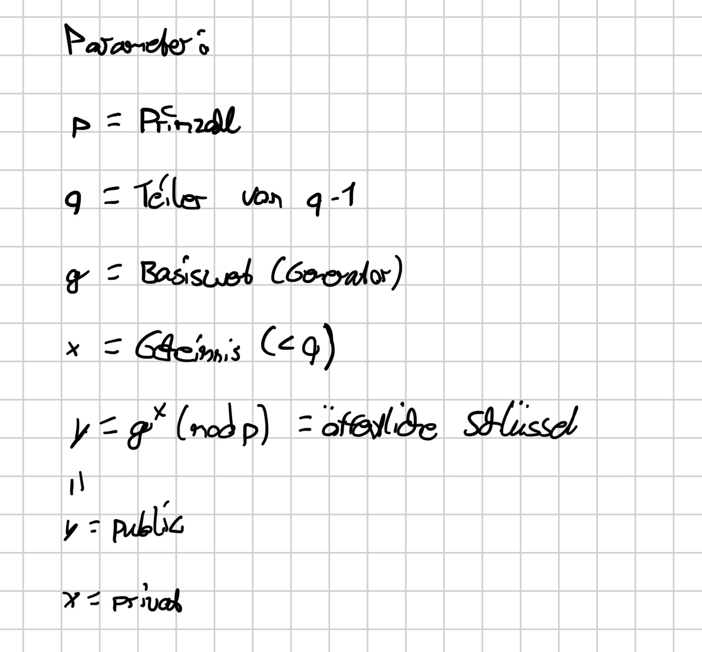
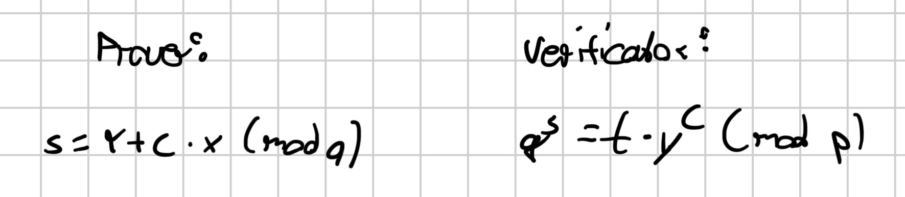
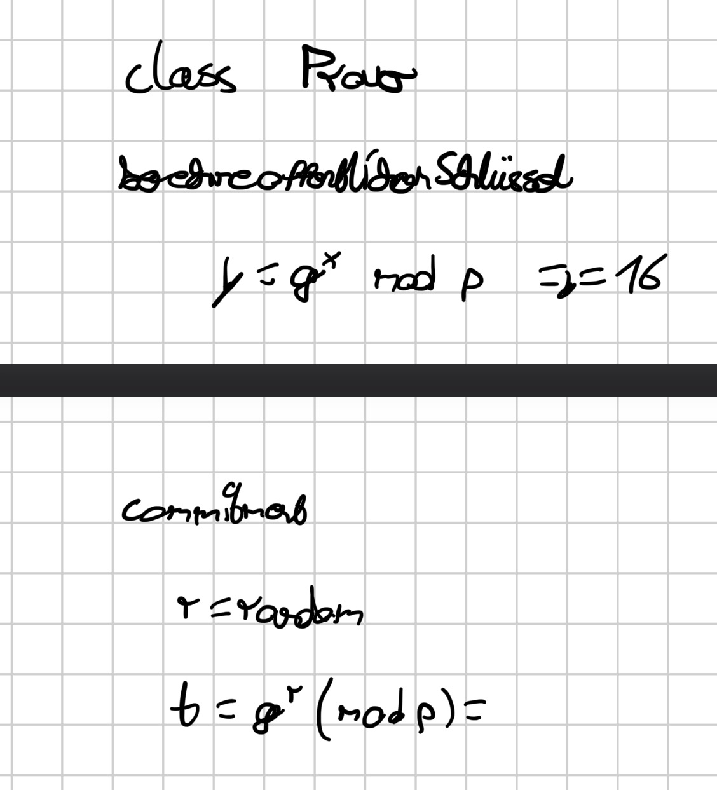
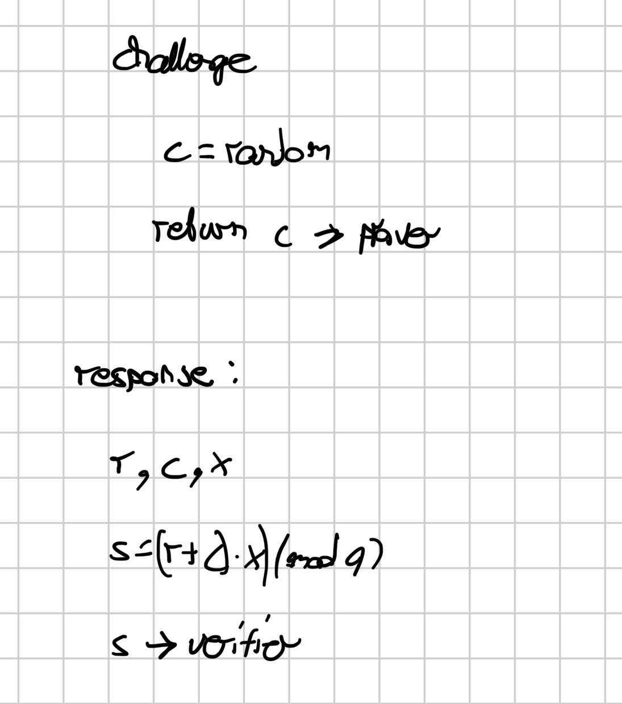
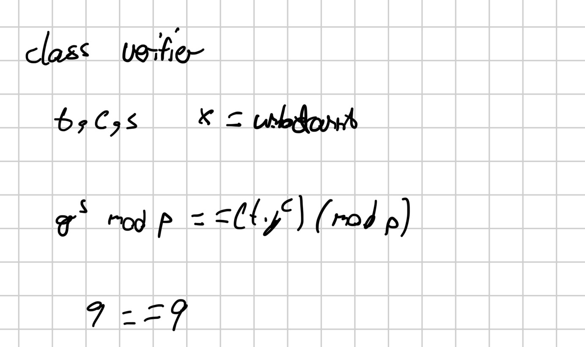

Building My First Schnorr Proof in C++
// …
I wanted to expand my C++ skills, and since I’ve recently become interested in cryptography, this seemed like the perfect project to try my hand at...
So I searched online for something beginner-friendly (okay, I asked Gemini :) ). I got a lot of nonsensical suggestions, but one thing stood out in particular: “zero-knowledge proofs.”
The name sounded harmless enough, so I decided to give it a try.
I started researching online and quickly came across some pretty confusing explanations. Apparently, it’s about proving that you know a secret without ever revealing it. Sounds strange, doesn’t it?
Imagine you know a secret, and your colleague wants proof that you know it. But there’s a catch: You’re not allowed to tell him what the secret actually is.
Magic? Telepathy? Well, not quite.
You might be wondering where something like this is actually used. Surprisingly, zero-knowledge proofs have practical applications, particularly in cryptography, digital identity systems, and certain cryptocurrencies.
But how does it all work?
Well, computer scientists have a pretty useful language for explaining things like this: mathematics.
But don’t worry. It’s actually easier to understand than you might think. Trust me, I speak from experience.
Okay, so let’s go back to the example with you and your colleague.
You’re the prover, and your colleague is the verifier. Not mathematical enough yet? Don’t worry, we’ll get to that in a moment.
As the prover, you know a secret number x that’s used to calculate a public key y.
Mathematically, the relationship between the secret and public keys looks like this:
Now you’re probably wondering where p and g come from and what on earth this modulo operator means.
Luckily, I have an answer for everything. Well, almost everything. If you’ve never heard of the % operator, you might want to ask ChatGPT. Just kidding! It simply gives you the remainder after division. For example: 27 % 23 = 4.
Now let’s move on to g and p.
p is a prime modulus. Basically, it’s a prime number that we use for modular arithmetic. If you have no idea what that means, feel free to look it up. ;)
g is our generator. It’s a carefully chosen number whose powers generate a mathematical group or subgroup modulo p. IMPORTANT: We can’t just pick any number here. It has to satisfy certain mathematical properties.
That’s why I asked Gemini to help me choose suitable values for g and p. After all, it’s better at mental math than I am.
For my little experiment, I decided on the following values:
- \(p = 23\)
- \(g = 2\)
With these values, g generates a subgroup with 11 elements. These numbers were deliberately chosen to be very small, making them perfect for learning and experimenting.
Of course, they would be completely unsuitable for real-world security. But hey, we’re here to learn, not to protect a billion-dollar bank. :)
For my secret, I chose the number 4:
Nothing special about it. I just wanted to keep the math simple.
With our previously chosen values, we get a public key of y = 16:
Now that we've calculated our public key, things get interesting. You and your friend can actually perform the entire verification process with just three messages. He's a dry texter.
// Commitment, Challenge, Response.
Now, you're probably wondering: What kind of challenge are we talking about? Does the verifier make me solve a CAPTCHA or something?
Well, not quite.
1. Commitment
First, you (the prover) choose a random number r. Think of it like making a secret move in poker. You don't want your opponent to know what you're planning.
Next, you calculate:
In your head, of course. Simple, right?
You then send t to the verifier, who has absolutely no idea what your randomly chosen r was.
2. Challenge
Now it's the verifier's turn. They generate a random number c and send it back to you.
At this point, we'll probably have gone through the entire alphabet. :)
But why do we need this random challenge?
Well, imagine you already knew which challenge c the verifier was going to send. You could potentially prepare a fake commitment and a matching response without actually knowing the secret x.
Not very secure, is it?
That's exactly why the verifier chooses c after receiving your commitment. You can't simply prepare your answer for a challenge you haven't seen yet.
Of course, our tiny example isn't particularly secure, but the principle becomes much stronger with properly chosen cryptographic parameters.
3. Response
Now it's your turn again.
You know your secret x, you remember your random number r, and you've just received the challenge c.
All the ingredients are there.
And guess what? Another letter joins the party.
Please welcome our newest friend: s.
You calculate your response using:
Wait, q? Seriously? Another letter?
Don't worry. In our example, q is simply 11, the number of elements in the subgroup generated by g.
And just like that, you've calculated your response without sending your secret x to anyone. Now the verifier simply checks whether \(g^s \bmod p\) equals \((t \cdot y^c) \bmod p\).
Sounds complicated? Well, let's take a look at what this actually looks like with our example:
Commitment: Choose \(r = 5\)
Challenge: The verifier chooses \(c = 3\)
Response:
Verification:
And that's it! Well, mathematically speaking, anyway. Your C++ editor is probably still staring back at you with an empty file.
And that's exactly why I'd encourage you to try implementing this yourself instead of just mindlessly copying someone else's solution. Trust me, you'll be doing yourself a favor.
You don't have to write a perfectly working program right away. Just grab your iPad, editor, or, if you're feeling crazy enough, grab a pen and paper.
Start by sketching out the basic structure of your program. What variables will you need? Which functions would make sense? Do you even need classes?
Don't worry about every little detail just yet. Focus on understanding the overall flow of your program first.
Once you've figured that out, actually writing the C++ code will become a whole lot easier.
// Complete Mathematical Procedure
1. Parameters
2. Generation of the Public Key
3. Commitment
The prover randomly selects \(r=5\).
4. Challenge
The verifier chooses a random value:
5. Response
6. Verification
The verifier checks:
// Implementation
So, did you manage to implement it yourself? I hope so, because now it's time to show you how I approached it.
My solution is far from perfect, so if you came up with something better, congratulations. You officially have bragging rights. :)
1. Planning Before Programming
First, I took some incredibly professional notes to sketch out the basic structure of my program. I didn't want to jump straight into coding without having at least some idea of what I was doing.
And don't be surprised if the language looks a little strange. It's German, and my handwriting doesn't exactly make things easier.


Parameters

Overview

Prover

Challenge / response

Verifier2. Time to Write Some C++
With my brilliant plan ready, I opened my editor and created two classes: Prover and Verifier.
The idea was pretty simple: each class would be responsible for its own part of the protocol.
The Prover class would handle generating the public key, creating the commitment, and calculating the response. Meanwhile, the Verifier class would generate the challenge and check whether the proof was valid.
Sounds easy enough, right?
Well, I started implementing my functions, including calculatePBkey(), commitment(), and response(). I defined my variables, wrote the calculations, and confidently clicked Compile.
Big mistake.
Suddenly, my compiler started throwing errors at me like there was no tomorrow. It felt like I was getting errors on line 12,324, even though my program barely had a few lines.
Naturally, I turned to the incredible resources available to programmers: Stack Overflow, Discord servers. Just kidding i headed straight to, Gemini.
Yes, I asked an AI for help debugging my code. Sue me. :)
One useful suggestion was to look into a library called GMP (GNU Multiple Precision Arithmetic Library).
3. My New Friend: GMP
You might be wondering why I needed an additional library just to calculate a few numbers.
Well, here's the thing.
Real cryptographic applications often work with ridiculously large integers, far beyond what a normal C++ int can store.
That's where GMP comes in. It allows us to work with integers of arbitrary precision.
Now, to be fair, my tiny example with p = 23 doesn't actually require GMP. A normal integer would work perfectly fine.
But I wanted to experiment with a library that could also handle much larger numbers in the future.
One particularly useful function I discovered was mpz_powm().
Instead of calculating a massive power first and then applying the modulo operator, it performs modular exponentiation directly.
For example, to calculate our public key, I used:
mpz_powm(gmp_y, gmp_g, gmp_x, gmp_p);And that's it. Our familiar equation, y = g^x mod p, translated into C++.
Pretty neat, isn't it?
Of course, GMP introduced some new things I had to learn, such as initializing large integers with mpz_init() and cleaning them up afterward with mpz_clear().
Apparently, programming wasn't complicated enough already.
4. Connecting the Prover and Verifier
Once the individual functions were implemented, I needed to connect everything.
That's where my main() function came in.
First, I created an instance of each class. Then I followed the same order as the mathematical protocol we discussed earlier.
The prover calculates the public key y and generates the commitment t.
Next, the verifier generates a random challenge c.
The prover receives that challenge and calculates the response s using its secret x.
Finally, the verifier checks whether the equation holds.
For this, I used another GMP function: mpz_cmp().
Here's something funny: when mpz_cmp() returns 0, it means the two numbers are equal.
Yes, zero means success. It's contradictory, isn't it? But that's just how C++ works.
If both sides of the equation match, my program prints "Succesful!"
And yes, I even managed to misspell "Successful". We'll call that a feature. :)
5. Is My Program Actually Secure?
Short answer: Absolutely not.
Long answer: Well, let me explain.
For starters, I'm using ridiculously small numbers. With p = 23, someone could easily try every possible secret until they found the right one.
Not exactly the kind of security you'd want for your bank account.
I also used std::mt19937 to generate the random values for the commitment and challenge.
It's useful for learning and simulations, but it isn't a cryptographically secure random number generator.
Another limitation is that although GMP supports huge integers, parts of my program still convert the results back into ordinary C++ integers.
So there's definitely room for improvement.
But that's okay. The goal of this project wasn't to build production-ready cryptographic software. It was to understand how the Schnorr protocol works and implement the basic mathematics myself.
6. What I Learned
Looking back, this project taught me more than I initially expected.
I learned about modular arithmetic, public and private keys, zero-knowledge proofs, and how to use GMP in C++.
But more importantly, I learned that understanding the mathematics before writing the code makes the implementation much easier.
My original plan was to find a small, beginner-friendly C++ project.
Instead, I ended up researching cryptography, writing mathematical equations on my iPad, fighting compiler errors, and asking an AI why my code wasn't working.
So yeah, pretty much a normal day in programming.
Would I do it again? Absolutely.
And if you're still staring at your empty C++ file, wondering whether you should give it a try, here's my advice:
Start small. Make mistakes. Understand what went wrong. And most importantly, don't just copy code you don't understand.
That's how we get better.
Thanks for reading, and happy coding! :)